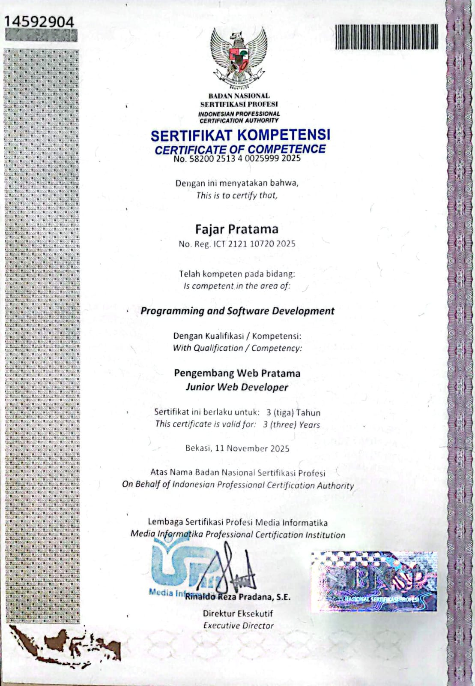
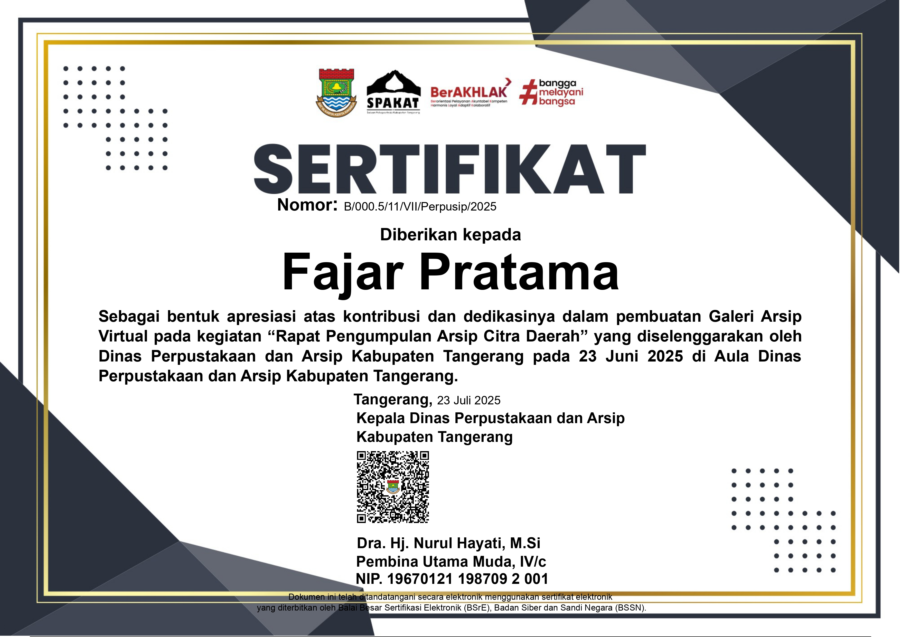

Web Developer | S1 Teknologi Informasi (CumLaude)
Spesialisasi dalam pengembangan aplikasi web berbasis PHP dan Laravel. Berpengalaman membangun sistem digital fungsional, responsif, serta mudah diakses.
Lulusan S1 Teknologi Informasi Universitas Tangerang Raya dengan predikat CumLaude (IPK 3.86/4.00). Memiliki keahlian kuat dalam pengembangan web penuh (*full-stack web development*), perancangan basis data, serta integrasi sistem digital untuk mendukung transformasi organisasi dan UMKM.
Berikut adalah aplikasi web yang telah diselesaikan dan dapat diakses secara langsung.
Platform galeri web berbasis PHP Native dan MySQL untuk mengelola dokumentasi sejarah serta arsip daerah Kabupaten Tangerang. Dilengkapi fitur pencarian artikel, pengelolaan kategori, serta pameran virtual 3D interaktif.
Website katalog promosi UMKM Desa Kresek untuk mendukung digitalisasi pemasaran produk lokal. Memiliki antarmuka responsif dan informatif guna mempermudah calon pelanggan mengakses katalog produk secara cepat.
Dinas Perpustakaan dan Kearsipan Kab. Tangerang | Mei 2025 – Agu 2025
Ndog Asin Desa Kresek | Nov 2025 – Des 2025
Himpunan Mahasiswa Teknologi Informasi | Mei 2022 – Feb 2023

Badan Nasional Sertifikasi Profesi (BNSP)
No: 58200 2513 4 0025999 2025Diterbitkan: November 2025

BSrE - Badan Siber dan Sandi Negara (BSSN)
No: B/000.5/11/VII/Perpusip/2025Diterbitkan: Juni 2025